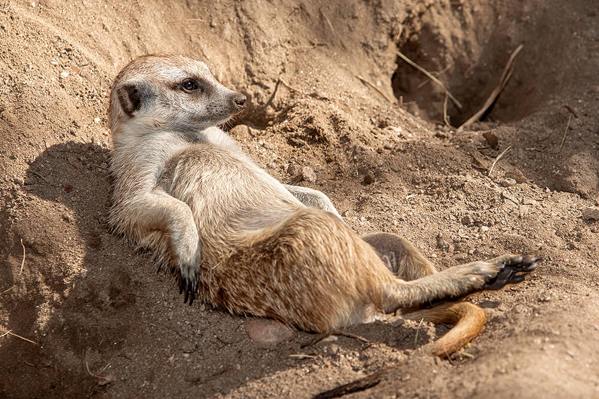

- Meerkats live in large groups called a gang or mobs. Meerkats depend on their mob for companionship and safety.
- Meerkats have dark circles around their eyes that decrease glare from the sun. Their thin fur and dark skin assist in regulating their body temperature.
- When the sun is out, they come out from their burrow to sunbathe, groom, and forage for food.
- Meerkats receive their hydration from their food. After the sun sets, they return to their burrow to snuggle in for the night.